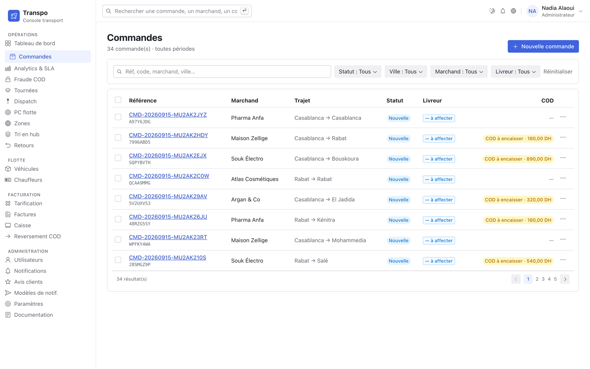

Le cash rentre mal
Le livreur encaisse, l’agence attend le dépôt, le marchand réclame son reversement. À 18 h, personne ne sait combien de dirhams sont en tournée.
Pour les sociétés de transport et de livraison · Maroc
Transpo est le logiciel des transporteurs marocains : le dispatch affecte, le livreur exécute même sans réseau, la livraison laisse une preuve opposable, et chaque dirham encaissé à la porte est suivi jusqu’au reversement du marchand.


Aucune de ces situations n’est un défaut d’organisation. Ce sont les conséquences normales d’une exploitation tenue au téléphone, au cahier et au tableur.
Le livreur encaisse, l’agence attend le dépôt, le marchand réclame son reversement. À 18 h, personne ne sait combien de dirhams sont en tournée.
« Livré » contre « jamais reçu ». Sans photo horodatée ni signature rattachée à un livreur identifié, c’est presque toujours le transporteur qui rembourse.
Qui est disponible, dans la bonne zone, avec le bon véhicule, sous sa limite de conduite ? La réponse est juste — tant que c’est la bonne personne qui est au bureau.
Chaque colis sans suivi partageable devient un appel au marchand, puis au dispatch. Ce coût-là ne figure sur aucune ligne de votre compte d’exploitation.
Ce que le terrain déclare alimente directement le bureau. Pas de recopie du soir, pas de tableur parallèle, pas de version du chiffre qui dépend de qui le donne.

Conçue pour une main, en plein soleil, avec un réseau qui tombe. Votre livreur n’a jamais à deviner ce que l’application attend de lui.
C’est le circuit le plus exposé d’un transporteur marocain, et celui qui tient le moins bien dans un tableur. Transpo le découpe, et chaque étape est datée et attribuée.
Le livreur saisit le montant reçu. La livraison ne se clôt qu’une fois l’encaissement enregistré.
Une session par livreur et par jour, alimentée course par course — des lignes, pas un total.
Le livreur déclare ce qu’il a réellement en main. Sans lui, vous ne rapprochez que vos propres chiffres.
Le montant remis est enregistré. Théorique, déclaré et déposé se confrontent.
Net à virer = brut collecté − commission, avec sa référence de virement. Un seul paiement possible.
Aucun écart ne se règle en silence. Une différence entre le déclaré et le théorique se résout avec un motif nommé et une note — monnaie rendue, paiement partiel, erreur de saisie, manquant à retenir. La session ne se clôt pas autrement.
Il dépose ses courses depuis son portail, suit les siennes — et uniquement les siennes — consulte son portefeuille et sa facture. Autant d’appels que votre exploitation ne prend plus.
Un code à huit caractères, sans compte, en français ou en arabe. Sans téléphone, sans adresse exacte, sans nom de livreur exposés. Et il note la livraison une fois qu’elle est faite.
Loi 09-08 sur les données personnelles, temps de conduite, cloisonnement entre sociétés, journal d’audit des actions sensibles. Appliqués par le logiciel, pas par une note de service.
Et une limite que la machine ne franchit pas : elle propose un livreur, signale un risque, bloque un envoi non consenti. Elle ne sanctionne personne et n’affecte rien à votre place.
Rien à installer sur vos postes : votre équipe se connecte à votre propre espace. On ouvre sur une ville, avec quelques livreurs et un marchand pilote, puis on élargit sur des chiffres.
Votre organisation, votre base dédiée, votre premier administrateur.
Véhicules et échéances, chauffeurs et permis, zones, marchands et leurs conditions.
Grille tarifaire, commission, TVA, niveaux de preuve par défaut, modèles de notification.
Le dispatcher sur la console, le livreur sur son téléphone. Il n’y en a pas d’autres.
Donnez-nous une journée type — un volume, deux ou trois zones, vos conditions marchands — et nous la rejouons dans un espace d’essai à votre nom. Vous verrez vos chiffres, pas les nôtres.